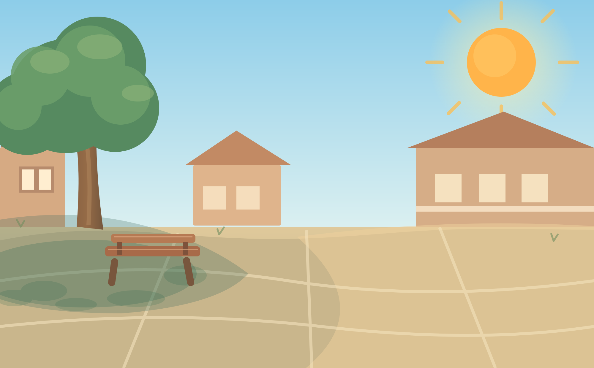
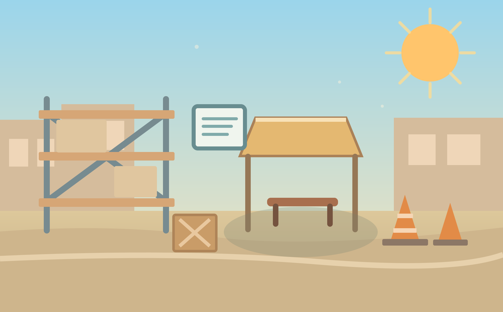

La ciutat sota una onada de calor
Reconeix els símptomes, valora la gravetat i actua davant situacions d’emergència.
SímptomesPrimers auxilisGrups vulnerables
Tria el teu cas
Dos reptes de 10 minuts i tres escenaris per cas: el segon incorpora una zona de treball exclusiva i comparteix només dos espais amb el primer. Pots tornar aquí en qualsevol moment.

Reconeix els símptomes, valora la gravetat i actua davant situacions d’emergència.

Consulta l'avís de calor, adapta l’activitat, protegeix un infant i segueix una veïna gran.